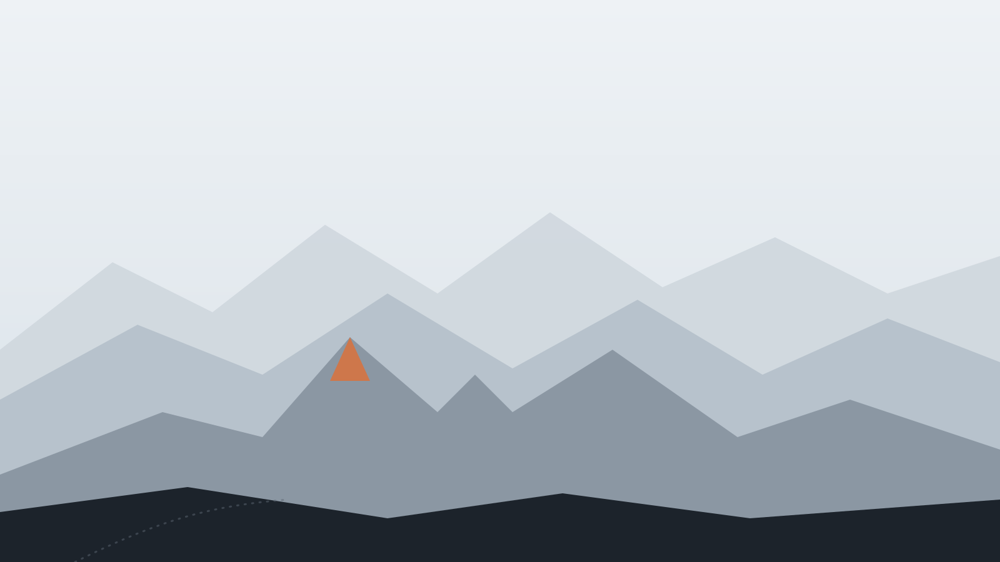
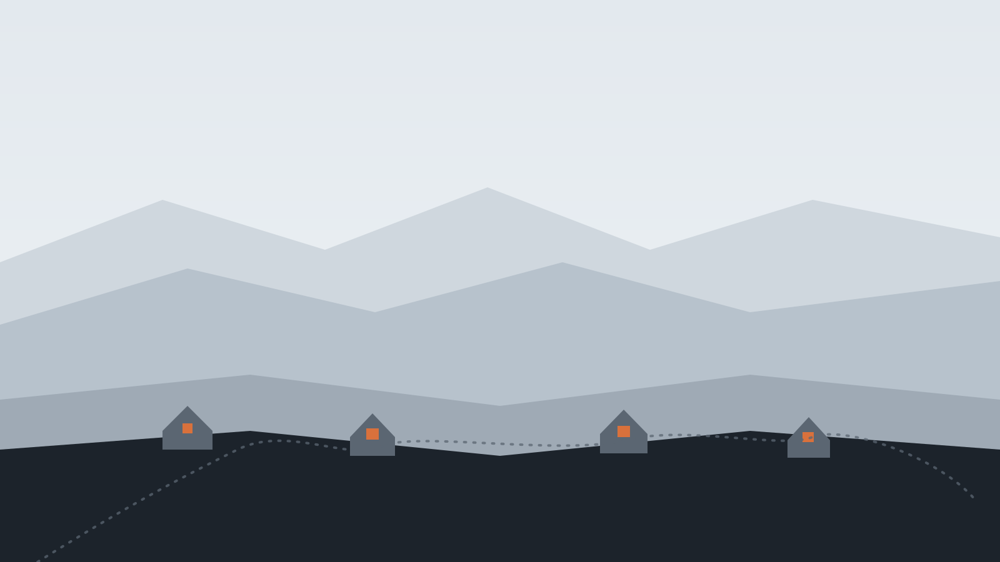
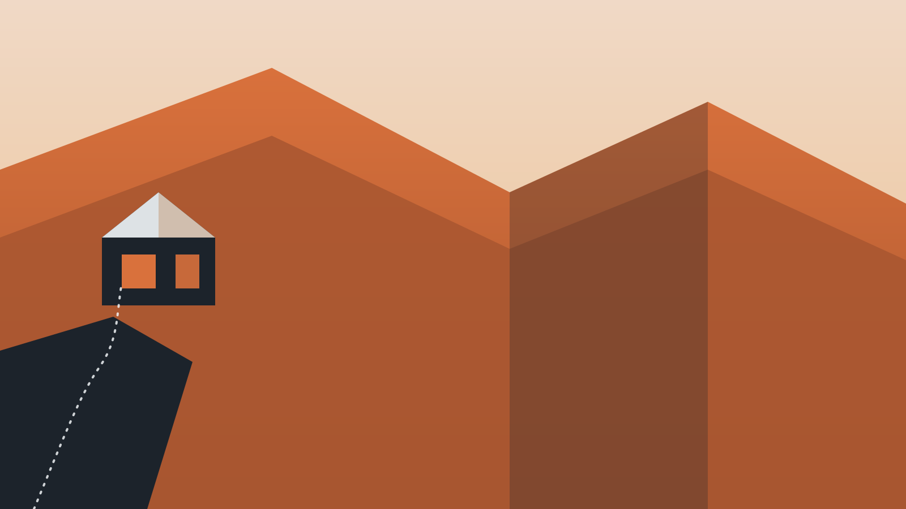
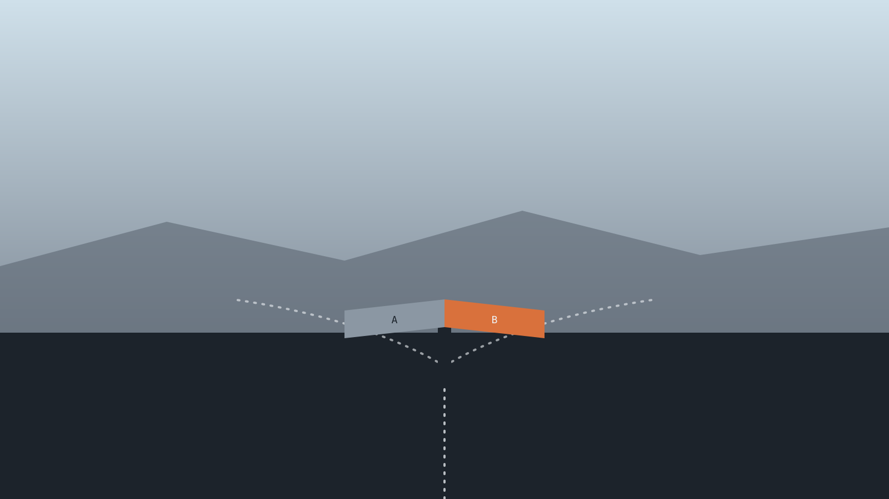
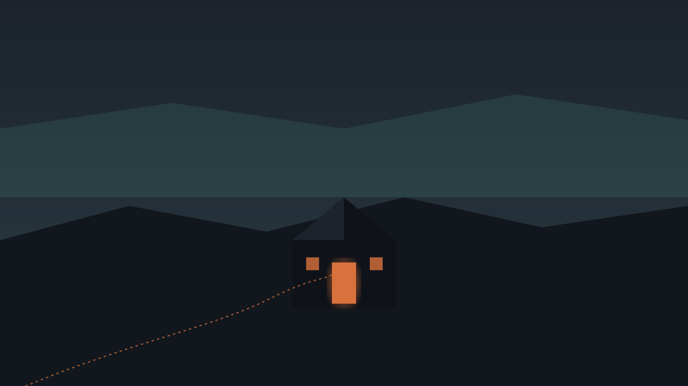

Disponible para nuevos negocios
Todo negocio merece
un hogar digital.
Diseño y desarrollo sitios a medida para que tu negocio tenga, por fin, un lugar propio en internet.
Trabajos
Negocios que ya
tienen su lugar.
Cada uno con su propia identidad — pensado desde cero para representar lo que ya construyeron.
Directo: hablás conmigo, no con un equipo de ventas.
Quién está del otro lado
Construyo cada sitio
como si fuera el mío.
Soy Franco, y Tierra es mi estudio — trabajo solo, basado en Dinamarca. Me dedico a que pequeños negocios tengan, por fin, una identidad propia en internet.
Cómo trabajamos
Dos formas de
empezar tu sitio.
Plan A — 700 kr. / mes, sin ataduras técnicas.
Plan B — 20.000 kr. pago único, control total.
Contacto
Démosle a tu negocio
su lugar propio.
Contame de qué se trata y qué te gustaría lograr.
Escribime